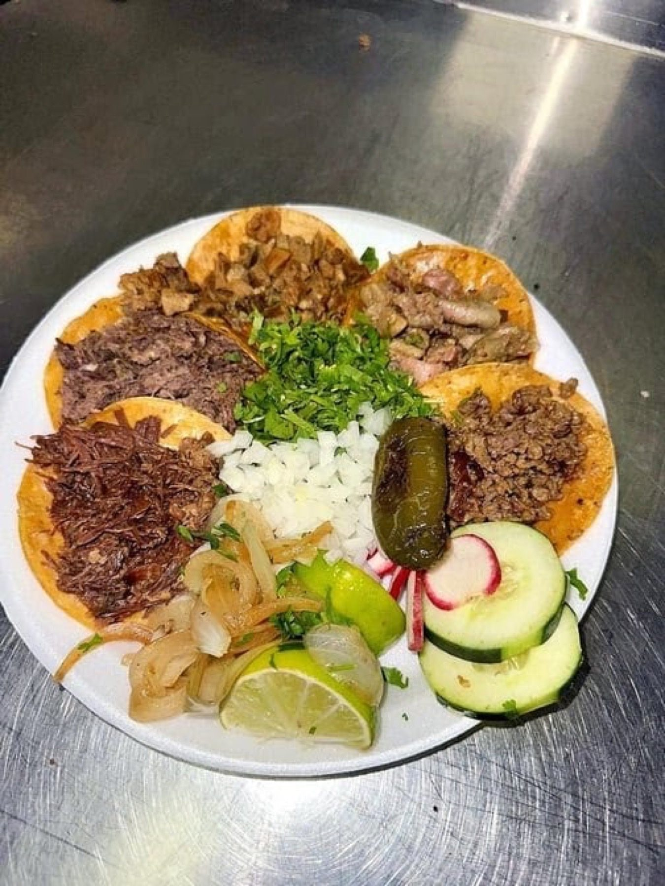

ITEM 1
Tacos by the cut
Bistek, suadero, tripas, cabeza, lengua and al pastor, plus mini tacos, made to order.
Taquería y panadería · San Antonio, TX
Jalisco-style taquitos, tortas and quesadillas made to order, with a pan dulce case.

Lo que piden
What we make at the counter on Nacogdoches Road.
Bistek, suadero, tripas, cabeza, lengua and al pastor, plus mini tacos, made to order.

Quesadillas with cheese and your choice of meat, and tortas from the same counter.

A case of pan dulce and tarts at the front, plus flan.


4.5 ★ · 3361 Google reviews
Awesome taqueria! Reminds me of being in Mexico with the cooks at their stations making you tacos with Cabesa, lengua, asada, and more. The quesadillas were great with cheese and your choice of meat. Fast service and great prices!
The food was great and we received very fast service. The young workers were attentive and very respectful. Great prices and portions.
First time here and I absolutely love it. I order 2 tripa tacos extras for breakfast tomorrow morning 😁 , while I was eating, the server came and I accidentally gave her the tripa tacos to take with the left overs if our food. Well, I didn't realize it until I was looking for them as we were gathering our things.
Kitchen notes
A bold red sign lists the cuts: bistek, suadero, tripas, cabeza, lengua. Order at the counter and watch the cooks at their stations.
A long dining room with black and cream tile, a mural of cooks, and glass cases full of pan dulce and tarts.

Pickup / dine in
12734 Nacogdoches Rd, San Antonio, TX 78217
Order at the counter. Open until 3 AM Friday and Saturday. Loud when full.